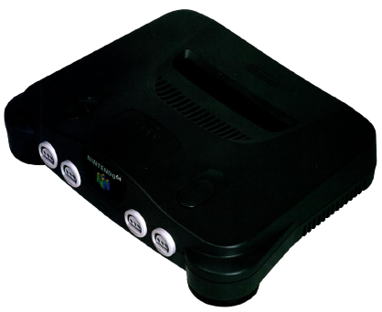
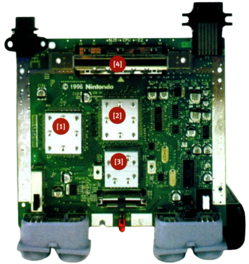

Just as in an SGI workstation, the heart of the N64 is a partnership between a Central Processor Unit and a custom co-processor. The N64’s RISC CPU is a 64-bit R4300i [1] running at 93.75 MHz, marginally below the original 100 MHz design spec but still powerful. By comparison, the PlayStation’s R3000i CPU processes half as much data (32-bit) per clock cycle, while running at roughly one third the speed (33Mhz).
The N64’s CPU also has an Integer and FPU 64-bit execution unit built into it, dramatically supercharging 3-D maths performance. Although the unbelievably R4300i only has a 32-bit system interface, to keep down costs, there are two large memory caches to store frequently accessed data.
The CPU’s partner chip, a 62.5 MHz Reality Immersion Co-Processor [2], was specifically designed by SGI for N64. Nintendo claim it incorporates a Reality Display Processor (for drawing pixels), a Reality Signal Processor (which handles 3-D and audio routines) and Audio Processing Unit (sound). This is principally a marketing gimmick, emphasising that while the Saturn has lots of different custom chips, SGI’s superior engineering crams all the custom processing into a single chip.
As with any console, custom hardware is what defines the system. Unlike a PC, there isn’t enough memory to execute huge graphics routines in software, so these have to be engineered into the hardware. This makes for a less flexible system, but also one which is far cheaper to manufacture, saves programmers having to develop their own low level routines and often incorporates features beyond the power of contemporary PCs.
The custom features which set the N64 apart from 32-bit rivals can be broken down into three main categories:
Z-BUFFERING: The z-axis sets the depth of any object in a 3-D landscape. On the N64, when a 3-D object is rendered the z-buffer automatically calculates which have to be drawn on-screen. This prevents processing time being wasted on unseen elements, and also provides very accurate collision detection. As a result, the N64’s 3-D graphics system is not only far more powerful than 32- bit rivals, but also considerably more efficient in its use of that power.
ADVANCED TEXTURE MAPPING: To make polygons appear more realistic, videogame artists create ‘textures’ which can be ‘mapped’ on to them, like a stone finish for a castle wall. 32- bit consoles were the first to handle this in hardware, but the N64 moves it a generation on. Perspective correction, for example, ensures textures accurately follow the contours of an object. While the PlayStation is notorious for distorting large texture maps as they approach, the N64’s superior design avoids these problems. It also offers environment mapping, which ensures even reflections are realistically rendered on surfaces.
The N64’s most powerful innovation, however, is something called Tri-linear Mip Mapping. On 32- bit consoles, are used to seeing texture-maps distort when seen close- up. The N64, by contrast, precomputes different levels of detail and automatically interpolates between the two most appropriate to an object’s positioning. This technology also applies to sprites, so whereas the monsters on PlayStation Doom become less realistic the closer you get, on N64 they just scarier and scarier!
ANTI-ALIASING: Although the N64 supports a high resolution flicker-free, 640x480 interlaced screen display, for memory and processing reasons most games — for any system — run at 320x240. This can lead to ‘jaggies’, stair-step distortions in lines when seen ona higher resolution TV display. Anti-aliasing smoothes away these distortions by advanced transparency effects, subtly blurring away jagged lines. It’s these latter two features which really create the distinctive look of N64 games. While the PlayStation and Saturn were sold on their ability to generate lots of polygons, the N64 not only offers even more polygons, but also the advanced graphics techniques previously only seen on high-end workstations. This is why Pilot Wings 64 really does look like an SGI graphics demo and not simply a 32-bit game with a few more colours or polygons. The Nintendo 64’s audio is provided by an impressive 100-channel Audio Sound Processor, built into Reality Immersion Co-Processor and capable of CD quality output. Of course, most games nowadays simply stream music off CD with soundchips only used for spot effects. While N64 carts haven’t the memory to offer the latest Spice Girls single as a backing track, Nintendo doesn’t regard this as a serious disadvantage. All N64 music must run through the soundchip so it can vary according to the action. It’s the difference between having a composer scoring a film and simply slapping your favourite CD on in the background.
Where N64 definitely beats 32-bit consoles is memory architecture. A PlayStation has just 1MB of fast graphics memory, while slower chips are used for main memory (2MB) and audio (0.5MB). Worse, moving data between different memory areas is very tricky during gameplay and so limits game design. The N64, by contrast, has just a single 4MB chunk of Rambus D-RAM [3] which, at 520.5MB/sec, is fast enough for anything.
The N64’s highspeed chipset is perfectly exploited by game cartridges [4]. Although they might seem ‘old- fashioned’ they offer virtually instantaneous loading. In comparison, 32-bit CD consoles grab data ata maximum 300K/sec — which doesn’t include the seek time. On N64, a game is ready to play from the moment you turn the machine on. Pauses for loading new levels are non-existent, allowing for a far more dynamic and flexible game design.
Cartridges do have some drawbacks: they’re far more costly to pro- duce than CDs and an average 12MB of memory compares poorly to 650MB of a CD. Nintendo claim advanced memory compression techniques cram ina lot more memory, but the proof is in the games themselves. The sheer scale, range of gameplay and graphic variety of Super Mario 64 dwarf anything yet seen on a CD. For modern arcade games, it’s development time and investment which limit game size, not storage capacity.
Besides carts, the most unusual feature of N64 is its revolutionary controller. This is built around a stubby analogue joystick. With a conventional digital controller, you constantly have to tap the D-pad to simulate a fast or slow turn. On N64, the faster you move the joystick the faster you turn. Analogue sticks are available for rival systems, but these are optional extras and games rarely support them. With N64, games can be written which only work with analogue control and almost all N64 games will support it.
Super Mario 64 fully illustrates the richness of this control system, enabling Mario to creep, walk, trot or sprint according to how fast the stubby joystick is moved. To further emphasise the importance of the stubby joystick, the N64 controller has three prongs allowing for a variety of different ways to hold it, each appropriate to different game-styles.
There’s also a slot for controller paks where game data can be stored, this is useful if a game cartridge doesn’t have built-in save memory, or if you simply want to take your best times and customised settings round to a friend’s house. Currently, paks have a capacity of 256K but they can be as big as 2MB.